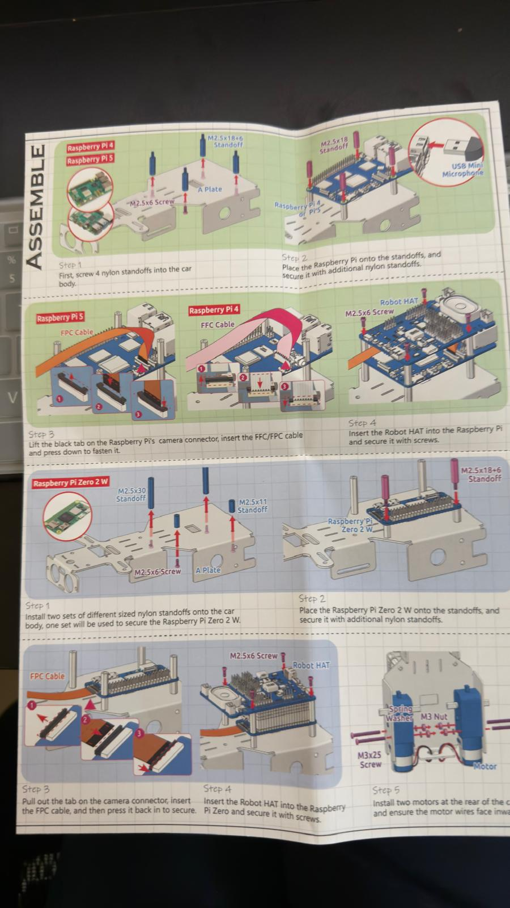
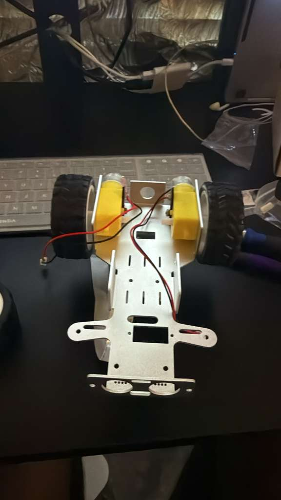
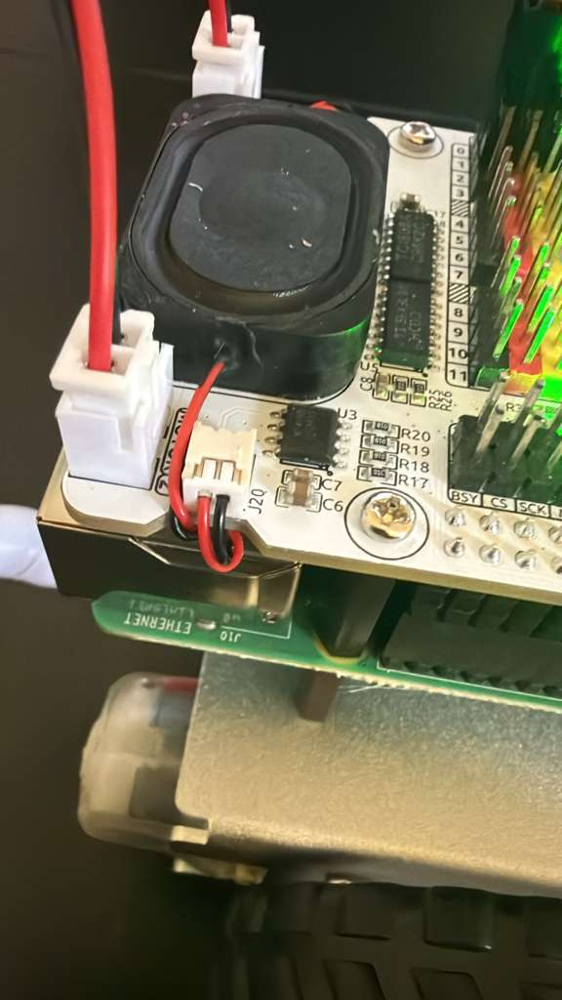
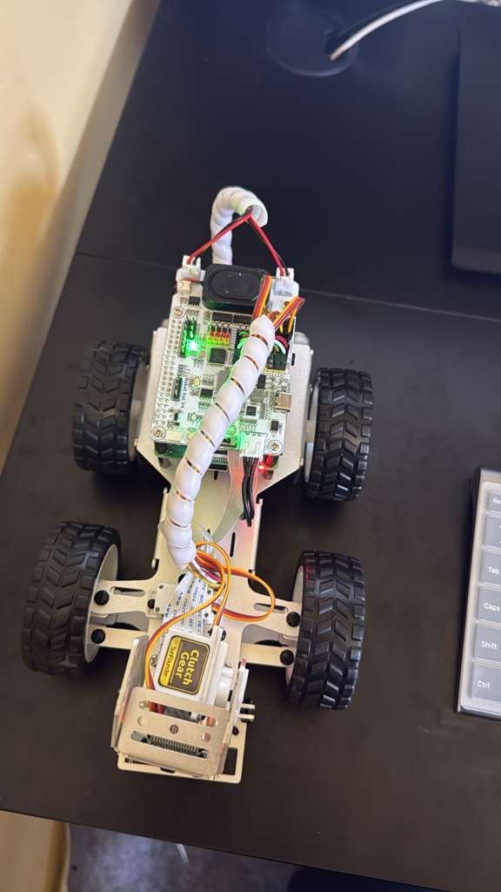
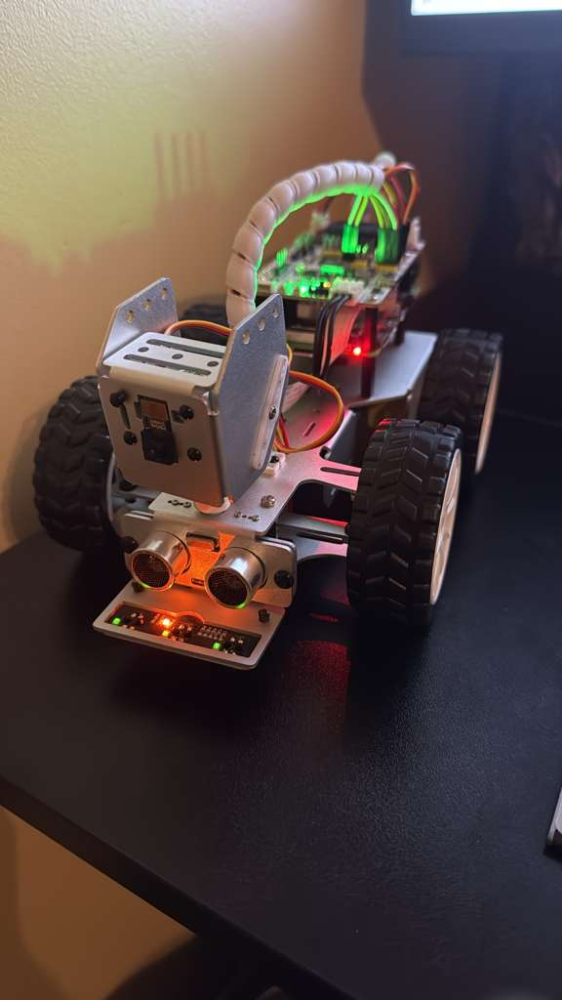

It started with a kit and a free weekend. By the end of it, four wheels were spinning under the control of a Raspberry Pi tucked into a tidy acrylic frame — and I'd learned more about motors, HATs, and ribbon cables than I expected to.
What's in the Box
The kit ships with everything you need to build a 4-wheel robot car around a Raspberry Pi. It supports the Pi 4, Pi 5, and the compact Zero 2 W — each with slightly different assembly paths. The instruction sheet lays it all out clearly, though small screws and acrylic pieces mean patience is the most important tool on the bench.

Key Components
- Raspberry Pi (4, 5, or Zero 2 W)
- Robot HAT (motor controller)
- 4-wheel acrylic chassis
- 2× DC motors with wheels
- Ultrasonic distance sensor
- Camera module with mount
- Speaker module
- FFC / FPC ribbon cable
- M2.5 standoffs and screws
- USB mini microphone
Building the Chassis
The base comes together quickly. Four nylon standoffs go into the acrylic A-plate, then the Raspberry Pi mounts on top. Two yellow DC motors bolt to the rear, their red and black wires snaking forward to meet the Robot HAT later. With the wheels pressed on, the skeleton already feels solid — you can see how it'll carry everything else.

The Brain: Robot HAT
The Robot HAT is where it all connects. It sits on top of the Raspberry Pi via the GPIO header, and from there it fans out to the motors, servos, sensors, and a small speaker. The board is dense — resistors, ICs, screw terminals, and a satisfying grid of green and red indicator LEDs that flash on boot.
Getting the FFC ribbon cable right is the trickiest step. Lift the tab, seat the cable, press it down — in the right order, aligned correctly. The instructions are precise here for good reason; a misaligned ribbon is the most common source of headaches in this build.

Wiring Everything Together
Once the HAT is mounted, the rest is a matter of routing. Motor wires, servo cables for the front steering, the ultrasonic sensor at the nose, and the camera up top all terminate on the HAT or the Pi's ports. Spiral cable wrap keeps the harness tidy and stops anything from snagging on the wheels.

First Boot
Plugging in power for the first time is the payoff moment. The Robot HAT's LEDs cycle green, the Pi boots, and the ultrasonic sensor's orange indicators blink as it starts ranging. The speaker clicks. Everything is where it should be.
At this stage the car doesn't move on its own — that requires loading the software stack and writing the control logic, which is the next chapter. But seeing it alive and responding to queries from a laptop over the local network was more satisfying than expected.

What's Next
The hardware is done. What follows is where it gets interesting: installing the camera streaming stack, writing motor control code, and eventually getting it to navigate autonomously using the ultrasonic sensor to avoid obstacles. There's also the microphone — small and easy to overlook in the box — which opens up voice command possibilities.
More notes to follow as the software side takes shape.